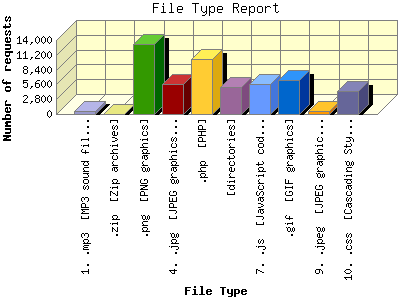

Analog 6.0
Analog 6.0 Report Magic 2.21
Report Magic 2.21The File Type Report identifies the type of information that is requested from the web site. GIF and JPG are the two types of graphic (image) files that are most commonly supported by web browsers. HTML (sometimes abbreviated HTM), ASP, and [directories] all represent actual pages. The number of image requests will almost always outnumber page requests as one page may contain several images.
This report shows results with at least 0.100000 percent of the total bytes. This report is sorted by amount of bytes transferred.

| File Type | Number of requests | Percentage of the bytes | |
|---|---|---|---|
| 1. | .mp3 [MP3 sound files] | 519 | 79.08% |
| 2. | .zip [Zip archives] | 15 | 13.66% |
| 3. | .png [PNG graphics] | 13,250 | 2.50% |
| 4. | .jpg [JPEG graphics] | 5,642 | 1.73% |
| 5. | .php [PHP] | 10,442 | 1.08% |
| 6. | [directories] | 5,088 | 0.68% |
| 7. | .js [JavaScript code] | 5,654 | 0.38% |
| 8. | .gif [GIF graphics] | 6,455 | 0.28% |
| 9. | .jpeg [JPEG graphics] | 623 | 0.28% |
| 10. | .css [Cascading Style Sheets] | 4,353 | 0.26% |
| [not listed: 8] | 1,161 | 0.06% | |
This report was generated on July 5, 2009 11:22.
Report time frame November 4, 2008 08:13 to February 26, 2009 22:45.
| Web statistics report produced by: | |
| Analog 6.0 | Report Magic 2.21 |